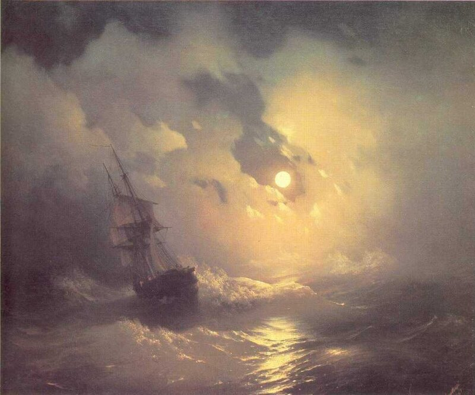
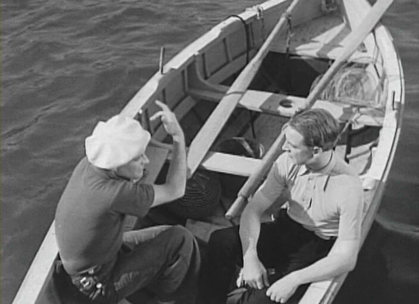

PANISSE : (...) J'ai peut-être oublié de vous dire qu'il est un peu jaloux.
M. BRUN : César est jaloux?
PANISSE : Non, le bateau est jaloux. Ça veut dire qu'il penche facilement sur le côté, vous comprenez?
PAGNOL, Fanny, 1932
ПАНИСС. Я, возможно, забыл сказать вам, что он слегка порывист.
БРЮН. Цезарь порывист?
ПАНИСС. Нет, корабль порывистый. Можно сказать, что он легко кренится на борт, вы понимаете?>

Айвазовский Буря на море ночью. 1849
Посмотрим сейчас еще на некоторые отрывки из перевода «Тружеников моря» А.Худадовой, о котором мы начали разговор прошлый раз.
"Рыскливый корабль, почти сам собою поворачивающийся к ветру, назывался «ранк»"
Текст оригинала:
… un navire qui se range au vent presque de lui-même, malgré ses voiles d’avant et son gouvernail, était un «vaisseau ardent »
…корабль, который почти самостоятельно поворачивает к ветру, несмотря на поставленные паруса и руль, назывался «рыскливым»
Рыскать, рыскнуть, морск. о парусном, судне: кидаться к ветру, идучи крутью, бетью (морск. бейдевиндом), вдруг бросаться носом к ветру, требуя уменьшенья задней парусности, или вниманья рулевого, который должен одерживать, класть руль на-ветер, чтобы не выдти из ветру, т. е. не придти носом против ветру. Иное судно рыскливо по постройке своей, и хотя руль на ветре хорошее качество, но внезапные порывы к ветру или рыскливость судна, порок.
"РЫСКЛИВОСТЬ ПАРУСНЫХ СУДОВ — если центр парусности у парусного судна лежит позади центра бокового сопротивления, то такое судно стремится поворачиваться носом к ветру; это свойство парусного судна называется рыскливостью. Рыскливость является недостатком, т. к. для удержания судна на курсе приходится править все время рулем,. В некоторых случаях Рыскливость может быть полезной, т. к. она облегчает поворот против ветра (поворот оверштаг). Поэтому на практике обыкновенно располагают центр парусности немного позади центра бокового сопротивления. Уменьшить рыскливость, увеличивающуюся с усилением ветра, можно двумя способами: передвижением центра парусности в нос судна или центра бокового сопротивления — в корму. Для достижения первой цели с усилением ветра уменьшают задние паруса больше, чем передние, а для достижения второй — дают дифферент на корму. На парусной шлюпке пересадкой команды с носа на корму и обратно можно сделать ее рыскливой и увальчивой и таким способом повернуть шлюпку без руля."
Рыскливость (Rambling of a ship) — отрицательное свойство некоторых судов, выражающееся в том, что они плохо держатся на курсе и произвольно виляют то в одну, то в другую сторону.
Лодка должна быть легка, ходка, но не качка́ и не вертлява и довольно глубока.
При задних ветрах, особенно при ходе на фордевинд, парусные суда часто бывают вертлявы, самопроизвольно поворачивая нос то в одну, то в другую сторону.
Причина вертлявости судна заключается в том, что при ходе на фордевинд действие ветра на задние паруса значительно больше действия его на передние, отчего центр парусности сильно переходит в корму. Наиболее вертлявыми судами являются суда небольшой длины, у которых грот-мачта слишком отставлена в корму (расстояние между фок- и грот-мачтами невелико) и, следовательно, носовые паруса закрываются от ветра кормовыми.
